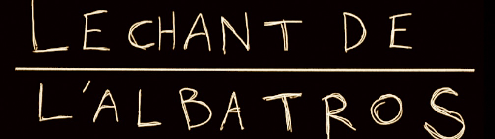

Le Chant de l'Albatros
Ouverte en janvier 2016, ma chaîne Youtube "Le Chant de l'Albatros" sert de lieu d'expérimentations de beaucoup de formes différentes, mais quelques format reviennent sur la période 2017-2018 durant laquelle je publie une vidéo par semaine :
- 1H1M1C : Une Heure, Un Mot, Une Chanson. En utilisant au moins un de 3 mots tirés au hasard dans un livre, je devais écrire et composer une chanson en 1 heure.
- Google Translate Chante : Après quelques allers-retours dans Google Translate, que reste-t-il de telle ou telle chanson connue ?
- Les Contes : Je raconte une histoire, accompagné de ma guitare.